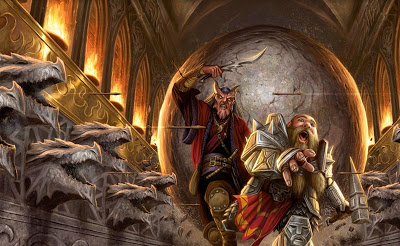

Pièges
On trouve des pièges à peu près n'importe où. Un pas malheureux au fin fond d'un ancien tombeau pourrait déclencher toute une série de faux tranchantes qui pourfendent armures et os. Les lianes, apparemment inoffensives, qui pendent à l'entrée d'une grotte pourraient agripper et étrangler quiconque cherche à les traverser. Un filet dissimulé parmi les arbres pourrait s'abattre sur les voyageurs qui passent au-dessous. Dans un jeu d'heroic fantasy, les aventuriers imprudents courent à leur perte, qu'ils soient brûlés vifs ou qu'ils trépassent sous une pluie de dards empoisonnés.
Un piège peut être de nature mécanique ou magique. Les pièges mécaniques incluent fosses, fléchettes camouflées, chutes de pierres, salles remplies d'eau, lames tourbillonnantes, et tout ce qui dépend d'un mécanisme pour fonctionner. Les pièges magiques sont soit des dispositifs magiques, soit de simples sorts utilisés en tant que piège. Les dispositifs magiques déclenchent les effets d'un sort lorsqu'ils sont activés. D'un autre côté, des sorts tels que glyphe de protection et symbole peuvent être utilisés pour créer des pièges.
Les pièges dans le jeu
Lorsque les aventuriers rencontrent un piège, vous avez besoin de savoir ce qui peut le déclencher et ce que cela entraîne le cas échéant, de même que les différentes façons pour les personnages de repérer ce piège et de le désactiver, ou de l'éviter.
Déclencher un piège
De nombreux pièges sont déclenchés lorsqu'une créature se dirige vers un endroit, ou touche quelque chose, que le créateur du piège souhaite protéger. Les déclencheurs les plus communs incluent marcher sur une plaque à pression ou une section de faux plancher, tirer sur un fil de détente, tourner une poignée de porte, et utiliser la mauvaise clé dans une serrure. Les pièges magiques sont souvent prévus pour s'actionner lorsqu'une créature pénètre dans une zone ou touche un objet. Certains pièges magiques (comme le sort glyphe de protection) ont des conditions de déclenchement plus complexes, comme un mot de passe empêchant l'activation du piège.
Détecter et désamorcer un piège
Généralement, certaines parties d'un piège peuvent être décelées au cours d'une inspection minutieuse. Les personnages pourraient repérer une dalle différente des autres dissimulant une plaque à pression, repérer le reflet lumineux émis par un fil de détente, remarquer de petits trous dans les murs desquels jailliront des projectiles enflammés, ou encore détecter quelque chose qui renseigne sur la présence du piège. La description de chaque piège spécifie le jet et le DD nécessaires pour le détecter, le désamorcer, ou les deux. Un personnage cherchant activement un piège peut tenter un jet de Sagesse (Perception) contre le DD du piège. Vous pouvez également comparer le DD de détection du piège avec la valeur de Sagesse (Perception) passive de chaque personnage pour déterminer parmi les membres du groupe ceux qui remarquent le piège en passant. Si les aventuriers détectent un piège avant qu'il ne soit déclenché, ils devraient être capables de le désarmer, de manière permanente ou juste le temps qu'ils le dépassent. Vous pourriez demander un jet d'Intelligence (Investigation) pour qu'un personnage déduise ce qu'il a besoin de faire, suivi d'un jet de Dextérité en utilisant des outils de voleur pour réaliser le sabotage nécessaire.
N'importe quel personnage peut tenter un jet d'Intelligence (Arcanes) pour détecter ou désarmer un piège magique, en plus de tous les jets indiqués dans la description du piège. Les DD sont les mêmes quel que soit le jet qui est tenté. De plus, un sort de dissipation de la magie a une chance de désactiver la plupart des pièges magiques. La description d'un piège magique indique le DD du jet de caractéristique effectué lorsque vous utilisez une dissipation de la magie. Dans la plupart des cas, la description d'un piège est suffisamment claire pour que vous puissiez juger par vous-même si les actions d'un personnage permettent de localiser ou de déjouer ce piège. Comme dans bien des situations, il est conseillé de remplacer un simple jet de dé par une planification judicieuse et une résolution intelligence de la situation. Utilisez votre bon sens en vous basant sur la description du piège pour déterminer ce qui va arriver. Aucun piège ne peut être conçu de sorte à anticiper toutes les actions possibles que les personnages pourraient tenter. Vous devriez permettre à un personnage de détecter un piège sans effectuer de jet de caractéristique si une action est censée révéler clairement la présence du piège. Par exemple, si un personnage soulève un tapis qui dissimule une plaque de pression, le personnage trouve ce déclencheur sans qu'aucun jet ne soit requis.
Déjouer des pièges peut être un peu plus compliqué que cela. Prenons l'exemple d'un coffre au trésor piégé. Si le coffre est ouvert sans qu'on ait tiré au préalable sur deux poignées situées sur ses flancs, un mécanisme situé à l'intérieur projette une volée d'aiguilles empoisonnées en direction de quiconque se trouve à l'avant du coffre. Après avoir inspecté le coffre et effectué quelques jets, les personnages ne sont toujours pas certains qu'il n'est pas piégé. Plutôt que d'ouvrir simplement le coffre, ils placent un bouclier devant lui et soulèvent le couvercle du coffre avec une barre de fer. Dans ce cas, le piège se déclenche normalement, mais la pluie d'aiguilles s'abat sur le bouclier sans blesser personne. Les pièges sont souvent conçus avec des mécanismes permettant de les désarmer ou de les éviter. Les monstres intelligents qui placent des pièges dans leur repaire, ou aux alentours, ont besoin d'un moyen de passer leurs propres pièges en toute sécurité. De tels pièges pourraient avoir des leviers cachés qui bloquent leur déclencheur, ou bien une porte dissimulée pourrait donner sur un passage secret contournant le piège.
Effets d'un piège
Les effets des pièges peuvent aller du simple inconvénient à la mort, utilisant pour cela flèches, pieux, lames, poison, gaz toxiques, jets de flammes et autres fosses profondes. Le plus mortel des pièges combine de nombreux aspects pour tuer, blesser, contenir ou renvoyer toute créature suffisamment malchanceuse pour les déclencher. La description d'un piège indique ce qui se produit lorsqu'il est déclenché.
Le bonus à l'attaque d'un piège, le DD du jet de sauvegarde pour résister à ses effets et les dégâts qu'il inflige varient en fonction de sa dangerosité. Utilisez la table DD de sauvegarde et bonus à l'attaque ainsi que la table Quantité de dégâts par niveau pour trouver des idées de pièges répartis en trois niveaux de dangerosité.
Un piège gênant n'est pas censé tuer ou grièvement blesser des personnages des niveaux indiqués, tandis qu'un piège dangereux est tout à fait capable de sérieusement amocher (voire de tuer) des personnages des niveaux indiqués. Un piège mortel est un bon moyen d'abattre des personnages des niveaux indiqués.
| Dangerosité du piège | DD de sauvegarde | Bonus à l'attaque |
|---|---|---|
| Gênant | 10 - 11 | +3 à +5 |
| Dangereux | 12 - 15 | +6 à +8 |
| Mortel | 16 - 20 | +9 à +12 |
| Niveau de personnage | Gênant | Dangereux | Mortel |
|---|---|---|---|
| 1 - 4 | 1d10 | 2d10 | 4d10 |
| 5 - 10 | 2d10 | 4d10 | 10d10 |
| 11 - 16 | 4d10 | 10d10 | 18d10 |
| 17 - 20 | 10d10 | 18d10 | 24d10 |
Pièges complexes
Les pièges complexes fonctionnent comme des pièges standards, sauf qu'une fois activés ils exécutent toute une série d'actions chaque tour. Un piège complexe se résout plus à la manière d'un combat que d'une rencontre conventionnelle avec un piège. Lorsqu'un piège complexe s'active, il fait un jet d'initiative. La description du piège indique son bonus à l'initiative. Lors de son tour, le piège s'active de nouveau et utilise le plus souvent une action. Il pourrait effectuer une succession d'attaques contre des intrus, produire un effet qui se modifie avec le temps, ou encore être à l'origine d'un défi dynamique. Quoi qu'il en soit, le piège complexe peut être détecté et désamorcé ou contourné de la même manière qu'un piège simple. Par exemple, un piège qui entraînerait l'inondation progressive d'une salle fonctionne mieux en tant que piège complexe. Lors du tour du piège, le niveau de l'eau augmente. Après plusieurs tours, la pièce est complètement submergée.
Exemples de pièges
Les pièges magiques et mécaniques présentés ci-dessous sont plus ou moins meurtriers.
Aiguille empoisonnée
Piège mécanique
Une aiguille empoisonnée est dissimulée dans la serrure d'un coffre au trésor, ou dans quoique ce soit d'autre qu'une créature pourrait ouvrir. Ouvrir le coffre sans la bonne clé fait jaillir l'aiguille qui délivre alors sa dose de poison. Lorsque ce piège est déclenché, l'aiguille surgit hors de la serrure sur 7,50 cm environ. Une créature se trouvant à portée subit 1 point de dégât perforant et 11 (2d10) dégâts de poison, et doit réussir un jet de sauvegarde de Constitution DD 15 sous peine d'être empoisonnée pendant 1 heure. Un jet d'Intelligence (Investigation) DD 20 réussi permet au personnage de déduire la présence du piège d'après les modifications qu'a subi la serrure pour y incorporer l'aiguille. Un jet de Dextérité DD 15 réussi en utilisant des outils de voleur permet de désamorcer le piège, en arrachant l'aiguille de la serrure. Un échec lors d'une tentative de crochetage de la serrure déclenche le piège.
Chute de filet
Piège mécanique
Ce piège utilise un fil de détente pour libérer un filet suspendu au plafond. Le fil de détente est situé à environ 7,50 cm du sol et est tendu entre deux colonnes ou deux arbres. Ce filet est dissimulé par des toiles d'araignée ou bien par le feuillage des arbres. Le DD pour repérer le fil de détente et le filet est de 10. Un jet de Dextérité DD 15 réussi en utilisant des outils de voleur désactive sans danger le fil de détente. Un personnage qui ne possède pas d'outils de voleur peut tenter ce jet avec un désavantage, il utiliser alors une arme tranchante ou tout objet coupant. En cas d'échec au jet, le piège se déclenche. Lorsque le piège est déclenché, le filet est libéré, recouvrant une zone carré de 3 mètres de côté. Ceux qui se trouvent dans la zone sont piégés sous le filet et entravés, et ceux qui échouent un jet de sauvegarde de Force DD 10 sont également jetés à terre. Une créature peut utiliser son action pour effectuer un jet de Force DD 10, se libérant, ou libérant une créature à portée, en cas de réussite. Le filet a une CA de 10 et 20 points de vie. Infliger 5 points de dégâts tranchants au filet (CA 10) en détruit une portion carrée de 1,50 mètre de côté, libérant toute créature piégée dans cette partie du filet.
Effondrement du plafond
Piège mécanique
Ce piège utilise un fil de détente pour entraîner l'effondrement de portions de plafond maintenues en équilibre instable. Le fil de détente est situé à environ 7,50 cm du sol et est tendu entre deux poutres supports. Le DD pour repérer le fil de détente est de 10. Un jet de Dextérité DD 15 réussi en utilisant des outils de voleur désactive sans danger le fil de détente. Un personnage qui ne possède pas d'outils de voleur peut tenter ce jet avec un désavantage, il utiliser alors une arme tranchante ou tout objet coupant. En cas d'échec au jet, le piège se déclenche. Quiconque inspecte les poutres peut facilement déterminer qu'elles sont simplement calées. En utilisant une action, un personnage qui fait tomber une poutre déclenche le piège. Le plafond situé au-dessus du fil de détente est en bien mauvais état, et n'importe qui pouvant le voir peut dire qu'il y a un risque que le plafond s'effondre. Lorsque le piège est déclenché, la partie instable du plafond s'écroule. Toute créature située dans la zone au-dessous de la partie instable doit effectuer un jet de sauvegarde de Dextérité DD 15, subissant 22 (4d10) dégâts contondants en cas d'échec, ou la moitié de ces dégâts en cas de réussite. Une fois que le piège est déclenché, le sol de la zone est recouvert de décombres et devient donc un terrain difficile.
Fléchettes empoisonnées
Piège mécanique
Lorsqu'une créature marche sur une plaque à pression, des fléchettes empoisonnées sont tirées depuis des tubes à ressort ou pressurisés intelligemment incorporés aux murs alentours. Une seule zone pourrait posséder une multitude de plaques à pression, chacune d'elle amorçant sa propre salve de fléchettes. Les petits trous dans les murs sont voilés par la poussière et les toiles d'araignées, ou bien savamment dissimulés dans des bas-reliefs, des peintures-murales, ou des fresques ornant les murs. Le DD pour remarquer les trous est de 15. Avec un jet d'Intelligence (Investigation) DD 15 réussi, un personnage peut déduire la présence d'une plaque à pression à partir de la différence entre les types de mortiers et de pierres utilisés pour la fabriquer et ceux utilisés pour le sol alentour. Coincer un piton de fer ou tout autre objet sous la plaque à pression empêche le piège de s'activer. Boucher les trous avec du tissu ou de la cire empêche les fléchettes qui s'y trouvent d'être lancées. Le piège s'active lorsqu'un poids d'au moins 10 kg est placé sur la plaque à pression, relâchant 4 fléchettes. Chaque fléchette effectue une attaque à distance avec un bonus de +8 contre une cible aléatoire se trouvant à 3 mètres ou moins de la plaque à pression (ne pas tenir compte de la vision pour ce jet d'attaque). S'il n'y a aucune cible dans cette zone, les fléchettes ne touchent rien. Une cible qui est touchée subit 2 (1d4) dégâts perforants et doit effectuer un jet de sauvegarde de Constitution DD 15, subissant 11 (2d10) dégâts de poison en cas d'échec, ou la moitié de ces dégâts en cas de réussite.
Fosses
Piège mécanique
Quatre pièges basiques de type fosse sont présentés ici.
Fosse simple. Un piège de type fosse simple est un trou creusé dans le sol. Le trou est recouvert d'une large toile fixée sur les bords de la fosse et camouflée avec de la terre et quelques débris. Le DD pour remarquer la fosse est de 10. Quiconque marche sur la toile passe au travers et tombe, avec la toile, au fond de la fosse, subissant des dégâts en fonction de sa hauteur de chute (les fosses sont généralement profondes de 3 mètres, mais certaines sont plus importantes encore).
Fosse camouflée. Cette fosse est recouverte par une surface fabriquée à partir de matériaux similaires à ceux constituant le sol tout autour. Un jet de Sagesse (Perception) DD 15 réussi permet de remarquer l'absence de traces de pas ou de toute autre marque de passage sur la portion du sol correspondant à la couverture de la fosse. Un jet d'Intelligence (Investigation) DD 15 réussi est nécessaire pour confirmer que la partie piégée du sol est en réalité le camouflage d'une fosse. Lorsqu'une créature fait un pas sur le camouflage, celui-ci pivote comme une trappe, provoquant la chute de l'intrus dans la fosse au-dessous. La fosse est généralement profonde de 3 à 6 mètres, mais certaines sont plus profondes encore. Une fois que le piège est détecté, un piton en fer ou tout autre objet similaire peut être coincé entre la trappe de la fosse et le sol attenant de sorte à empêcher la trappe de s'ouvrir, permettant ainsi de marcher dessus en toute sécurité. La trappe peut également être condamnée en utilisant un sort de verrou magique ou tout autre effet magique similaire.
Fosse à fermeture. Ce piège est identique à une fosse camouflée, avec une seule exception : la trappe qui recouvre la fosse fonctionne avec un ressort. Après qu'une créature soit tombée dans la fosse, la trappe se referme brusquement pour piéger sa victime à l'intérieur. Un jet de Force DD 20 réussi est nécessaire pour forcer l'ouverture de la trappe. On peut aussi ouvrir la trappe en la fracassant. Un personnage dans la fosse peut également tenter de désamorcer le mécanisme de l'intérieur en réussissant un jet de Dextérité DD 15 tout en utilisant des outils de voleur, à condition que le mécanisme soit à portée et que le personnage puisse voir ce qu'il fait. Dans certains cas, un mécanisme (généralement dissimulé derrière une porte secrète située à proximité) permet d'ouvrir la trappe.
Fosse hérissée de pieux. Ce piège est une fosse simple, camouflée ou à fermeture, dont le fond est hérissé de pieux aiguisés en bois ou en fer. Une créature qui chute dans cette fosse subit 11 (2d10) dégâts perforants à cause des pieux, en plus des dégâts occasionnés par la chute. Des versions de ce piège, moins agréables encore, voient les pointes de leurs pieux enduites de poison. Dans ce cas, quiconque subit des dégâts perforants de la part des pieux doit également effectuer un jet de sauvegarde de Constitution DD 13, subissant 22 (4d10) dégâts de poison en cas d'échec, ou la moitié de ces dégâts en cas de réussite.
Statue au souffle de feu
Piège magique
Ce piège est activé lorsqu'un intrus pose le pied sur une plaque de pression dissimulée, libérant un jet de flammes magiques depuis une statue située à proximité. La statue peut être n'importe quoi, comme un dragon ou bien un magicien en train de lancer un sort. Le DD pour repérer la plaque de pression, ainsi que de petites traces de brûlure sur le sol et les murs, est de 15. Un sort, ou tout autre effet permettant de repérer des traces de magie, comme le sort détection de la magie, révèle une aura magique de l'école de l'évocation tout autour de la statue. Le piège s'active lorsque au moins 10 kg sont placés sur la plaque de pression, provoquant un déferlement de flammes, depuis la statue, dans un cône de 9 mètres. Chaque créature se trouvant dans le feu doit effectuer un jet de sauvegarde de Dextérité DD 13, subissant 22 (4d10) dégâts de feu en cas d'échec, ou la moitié de ces dégâts en cas de réussite. Glisser une barre de fer ou tout autre objet sous la plaque de pression empêche le piège de s'activer. Une dissipation de la magie réussie (DD 13) lancée sur la statue détruit le piège.
Sphère d'annihilation
Piège magique
D'impénétrables ténèbres magiques emplissent la bouche béante d'un visage de pierre sculpté dans un mur. La bouche fait 60 centimètres de diamètre et est à peu près circulaire. Aucun son ne sort de la bouche, aucune lumière ne peut en éclairer l'intérieur, et toute matière qui y pénètre est instantanément effacée de ce monde. Un jet d'Intelligence (Arcanes) DD 20 réussi révèle que la bouche contient une sphère d'annihilation qui ne peut être contrôlée ni déplacée. Elle est sinon identique à une sphère d'annihilation normale. Certaines versions de ce piège comprennent un enchantement placé sur le visage de pierre, et qui instille aux créatures l'irrépressible besoin de s'approcher du mur et de plonger dans la bouche. Cet effet est par ailleurs identique à l'aspect attirance du sort aversion/attirance. Une dissipation de la magie réussie (DD 18) détruit cet enchantement.
Sphère roulante
Piège mécanique
Lorsque 10 kg ou plus sont appliqués sur la plaque à pression de ce piège, une trappe camouflée dans le plafond s'ouvre, libérant un rocher sphérique, roulant, de 3 mètres de diamètre. En réussissant un jet de Sagesse (Perception) DD 15, un personnage peut remarquer la trappe ainsi que la plaque à pression. Une recherche sur le sol accompagnée d'un jet d'Intelligence (Investigation) DD 15 réussi révèle des nuances dans le mortier et la pierre utilisés qui trahissent la présence de la plaque à pression. Le même jet effectué pendant l'inspection du plafond permet de constater des variations dans le travail de la pierre qui révèlent la présence de la trappe. Glisser un piton de fer ou tout autre objet sous la plaque à pression empêche le piège de s'activer. Lors de l'activation du piège, toutes les créatures présentes doivent faire un jet d'initiative. La sphère fait un jet d'initiative avec un bonus de +8. Lors de son tour, elle se déplace de 18 mètres en ligne droite. La sphère peut se déplacer au travers de l'espace occupé par une créature, et les créatures peuvent se déplacer au travers de l'espace occupé par la sphère, le considérant comme un terrain difficile. À chaque fois que la sphère pénètre dans l'espace occupé par une créature ou qu'une créature pénètre dans l'espace occupé par la sphère alors qu'elle roule, cette créature doit réussir un jet de sauvegarde de Dextérité DD 15 sous peine de subit 55 (10d10) points de dégâts contondants et être jetée au sol. La sphère s'arrête lorsqu'elle percute un mur ou une barrière similaire. Elle ne peut pas tourner aux angles des murs, mais les concepteurs de donjon intelligents intègrent de longues courbes aux couloirs, ce qui permet à la sphère de continuer à se déplacer. En utilisant une action, une créature se trouvant à 1,50 mètre de la sphère peut tenter de la ralentir en réalisant un jet de Force DD 20. En cas de réussite, la vitesse de la sphère est réduite de 4,50 mètres. Si la vitesse de la sphère tombe à 0, elle cesse de se déplacer et n'est plus dangereuse.
Traduit par boblebuter